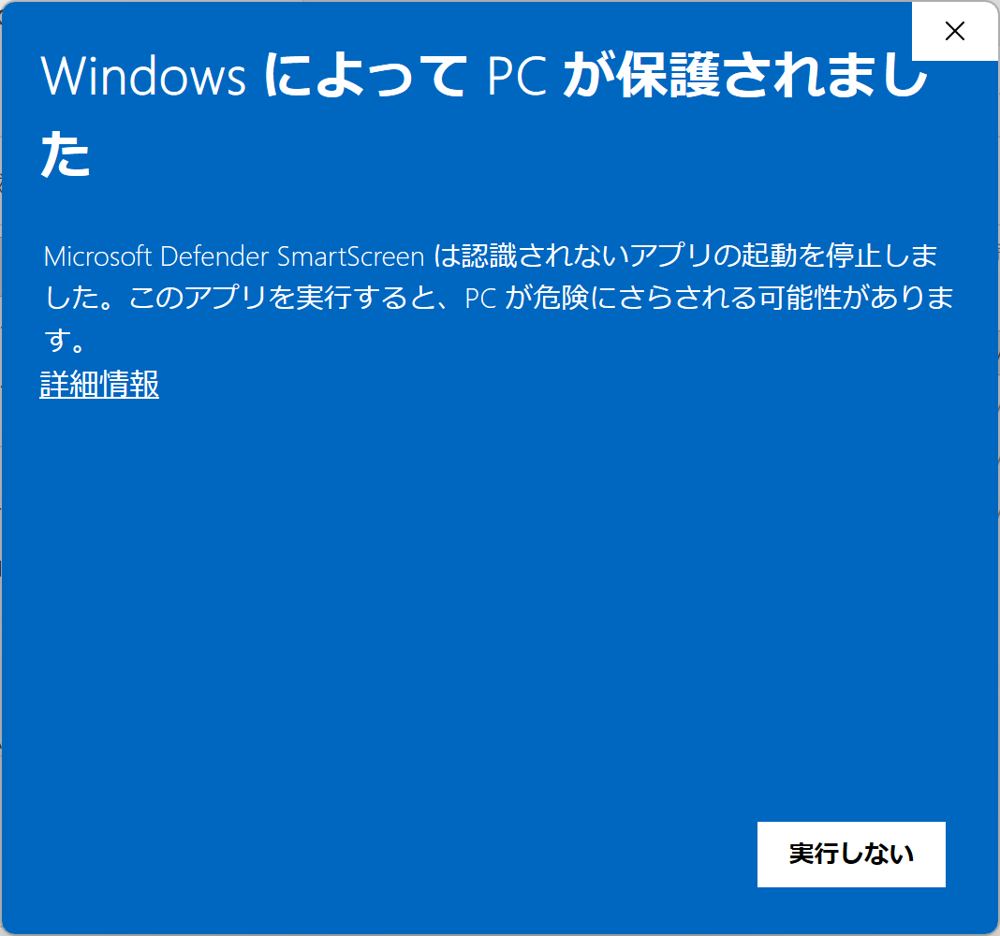
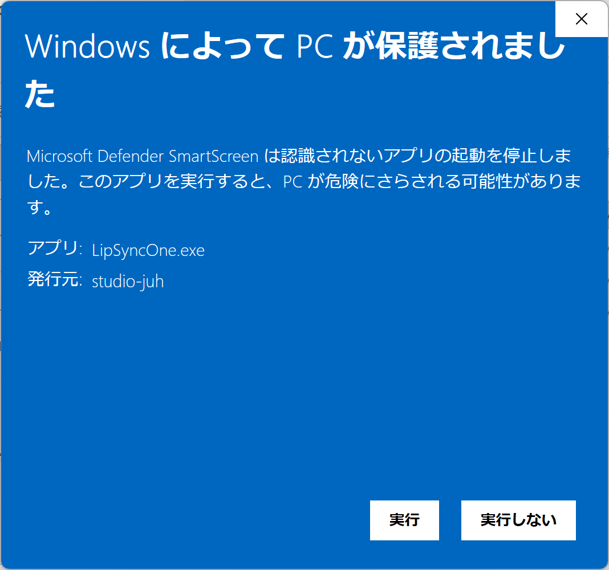
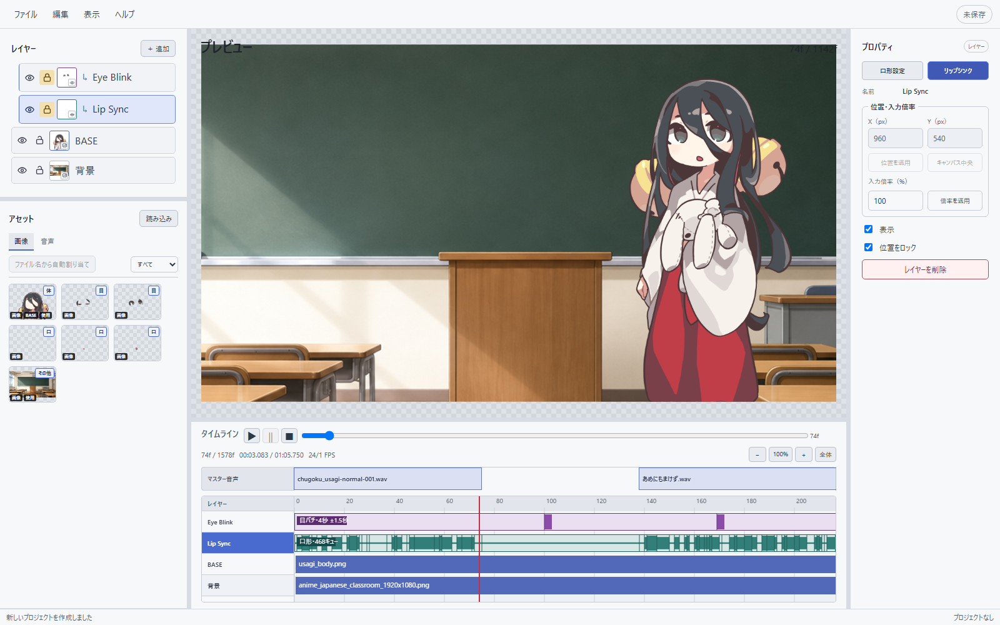

LipSyncOne ヘルプ
PNG差分画像と音声から、口形・目パチ付きのアルファ動画素材を作るまでの操作を案内します。
Windows x64 最新安定版 v0.1.2
01
インストール
| 配布形式 | 使いかた | 向いている用途 |
|---|---|---|
| インストーラー版 | LipSyncOne_<version>_x64-setup.exeを実行 | 通常のWindowsアプリとして使う |
| ポータブル版 | ZIPを展開し、フォルダー内の実行ファイルを起動 | 任意の場所で管理する |
{kind=link}

{kind=link}

画像はポータブル版の例です。インストーラー版ではアプリ名にダウンロードしたセットアップファイル名が表示されます。画像を選ぶと原寸で確認できます。
02
最初の動画を作る
最小構成は、BASE画像1枚、閉じ口と開き口、音声1本です。

- プロジェクトを作成HOMEで「新規プロジェクト」を選び、カンバスサイズとFPSを決めます。
- 素材を読み込むアセットの「読み込む」から、透過PNGとWAVまたはMP3を追加します。
- タイムラインへ配置BASE画像と音声を、それぞれ画像レイヤーとマスター音声へドラッグします。
- 口と目を設定レイヤー欄の「＋追加」から、口・リップシンクと目・目パチを追加します。
- 解析して確認リップシンクレイヤーを選び、プロパティの「リップシンク」から音声を解析します。
- 動画を書き出すプレビューを確認し、「ファイル → 動画を書き出す」を選びます。
03
画面の見かた
編集画面は、素材・プレビュー・設定・時間編集の4領域に分かれています。

- 左上：レイヤー
- 表示順、表示・非表示、位置ロック、名前を管理します。
- 左下：アセット
- 読み込んだ画像と音声をタブで切り替えます。
- 中央：プレビュー
- ホイールで拡大縮小、ドラッグで移動、ダブルクリックで表示を戻します。
- 右：プロパティ
- 選択中のレイヤー、クリップ、アセットの設定を表示します。
- 下：タイムライン
- 音声、口形、目パチ、画像クリップを時間順に確認します。
ライトテーマの表示を確認する
{kind=link}

04
素材を準備する
正式な画像制作経路は透過PNGです。音声はWAVまたはMP3を利用できます。
対応する差分画像
- BASE：キャラクター本体。口や目が従属する基準レイヤーです。
- 口形：閉・開の2枚、閉・中・大の3枚、Rhubarb A〜H/Xの9枚。
- 目：開・閉の2枚、または開・中割・閉の3枚。
- 背景・小物：通常レイヤーとしてBASEより上にも下にも配置できます。
ファイル名からまとめて割り当てる
アセット欄で画像を複数選択し、「ファイル名から自動割り当て」を押します。読み込み直後に勝手に割り当てることはありません。
usagi_body.png
usagi_mouth_closed.png
usagi_mouth_medium.png
usagi_mouth_wide.png
usagi_eye_open.png
usagi_eye_half.png
usagi_eye_closed.png空白からドラッグして範囲選択、Ctrl＋クリックで追加・解除、Shift＋クリックで連続選択できます。
05
口形画像を設定する
レイヤー欄の「＋追加 → 口・リップシンク」から設定します。

| 設定 | 必要な画像 | 用途 |
|---|---|---|
| かんたん（2枚） | 閉口、開口 | 最短で始める |
| かんたん（3枚） | 閉口、中口、大口 | 少ない素材で自然さを上げる |
| 詳細（9口形） | A〜H、X | Rhubarb標準の口形を個別に描く |
06
音声を解析する
解析は音声クリップ単位で保存されます。クリップ移動や無音区間の追加だけなら、通常は再解析不要です。

- 音声を配置音声タブからマスター音声トラックへドラッグします。
- 解析画面を開くリップシンクレイヤーを選び、プロパティの「リップシンク」を押します。
- 音量補正を確認既定値は音量の影響度70%、無音しきい値−42 dBです。
- 適用解析後にプロジェクトへ適用すると、タイムラインへ口形キューが表示されます。
07
目パチを設定する
レイヤー欄の「＋追加 → 目・目パチ」から開眼・閉眼画像を設定します。中割は任意です。
- 平均間隔
- 目パチ同士のおおよその間隔を秒で指定します。
- ランダム幅
- 一定周期に見えないよう、前後へ時間差を加えます。
- 閉眼時間
- 目を閉じている長さをフレームで指定します。
- パターン変更
- 間隔設定を保ったまま、別のランダム配置を生成します。
08
タイムラインを編集する
| 操作 | 方法 |
|---|---|
| 表示・非表示 | レイヤー左端の目アイコンを押します。 |
| 位置ロック | 鍵アイコンを押します。キャンバス上のX / Y移動だけを防ぎます。 |
| 名前変更 | レイヤー名をダブルクリックします。 |
| 並べ替え | レイヤー行を上下へドラッグします。 |
| 音声ゲイン | マスター音声クリップを選び、プロパティで−60〜＋12 dBを指定します。 |
| 無音を追加 | マスター音声トラックを右クリックし、無音区間を追加します。 |
| スナップを一時解除 | クリップを動かしながらAltを押します。 |
| 長尺を全体表示 | 倍率欄の「全体」を押します。0.1%まで縮小できます。 |
09
保存と素材収集
.lsoファイルに保存されるもの
.lsoには編集内容と設定を圧縮して保存します。参照中のPNG・WAV・MP3そのものは、通常の保存では埋め込みません。
別のPCへ移す・バックアップする
「ファイル → プロジェクトを収集して保存」を選びます。.lsoと使用中の素材をまとめたCollected_プロジェクト名フォルダーが作られます。
10
動画を書き出す
「ファイル → 動画を書き出す」またはCtrl＋Eで開きます。

| 用途 | 形式 | 特徴 |
|---|---|---|
| Adobe Premiere Pro | ProRes 4444 Alpha / MOV | 編集用の標準的なアルファ素材 |
| 可逆アルファマスター | FFV1 / MKV | 完全可逆で保管する |
| 軽量WebM | lossless VP9 / WebM | 透明度を保ちながら容量を抑える |
| Windows確認用 | H.264 / AAC MP4 | カラーキー付き・非可逆。標準プレイヤーで確認しやすい |
11
更新とRhubarb
- アプリ更新：起動時に安定版を確認します。手動では「ヘルプ → アップデートを確認」を選びます。
- Rhubarb 1.14.0：初回解析時に容量とライセンスを表示し、同意後に個別ダウンロードします。
- 購入者証明：BOOTH版の
.lso-licenseは「ヘルプ → 購入状態」から読み込みます。
12
主なショートカット
| Ctrl＋S | プロジェクトを保存 | Ctrl＋E | 動画を書き出す |
|---|---|---|---|
| Ctrl＋Z | 元に戻す | Ctrl＋Shift＋Z | やり直す |
| Ctrl＋C | 選択クリップをコピー | Ctrl＋V | 再生位置へ貼り付け |
| Alt＋↑ / ↓ | 選択レイヤーを移動 | Ctrl＋K | このヘルプ内を検索 |
13
困ったときは
Windowsが実行を止める
公式Releaseから取得したファイルであることを確認します。現在は自己署名のためSmartScreenが表示される場合があります。インストール欄の画面例に沿って「詳細情報」を開き、アプリ名と発行元を確認してください。
音声や画像を読み込んでもタイムラインに出ない
読み込みはアセットへの登録だけを行います。画像は対象レイヤーへ、音声はマスター音声トラックへドラッグしてください。
「Master audio preparation failed」と表示される
参照元の音声が移動、改名、削除されていないか確認してください。音声を読み込んだだけの場合は、マスター音声トラックへ配置します。
リップシンク解析を開始できない
マスター音声にクリップがあり、口レイヤーへ口形画像が設定されているか確認します。Rhubarb未導入の場合は、解析画面の案内からダウンロードします。
無音に近い区間でも口が開く
解析画面で無音しきい値を上げるか、音量の影響度を上げて再解析します。特に2枚・3枚口形で効果があります。
口や目が表示されない
専用レイヤーの目アイコン、画像割り当て、位置、現在フレームにBASEクリップがあるかを確認します。BASEがない区間では従属する口と目も表示されません。
音声の最後がフレーム境界と合わない
音声はフレームで切り捨てず、元の最終サンプルまで保持します。タイムラインのバー端がフレーム線の途中になるのは正常です。
BGMやサブ音声を重ねられる？
現在は、口形解析の基準となるマスター音声1トラックだけを扱います。同じトラックへ複数の台詞クリップを時間順に置くことはできますが、同時に重ねることはできません。BGMやサブ音声はPremiere Proなどの仕上げ先で追加してください。
アルファ動画をWindows標準プレイヤーで再生できない
標準プレイヤーがProRes 4444やFFV1のアルファへ対応しない場合があります。編集ソフトへ直接読み込むか、確認用のカラーキーH.264 MP4を書き出してください。
別のPCで素材が見つからない
元の.lsoだけでは素材を内包しません。元のPCで「プロジェクトを収集して保存」を実行し、作成されたフォルダー全体を移動してください。
解決しない場合
アプリのバージョン、Windowsのバージョン、再現手順、表示されたメッセージを添えて報告してください。公開できない音声・画像や個人情報は添付しないでください。
該当する項目がありません。別の言葉で検索してください。